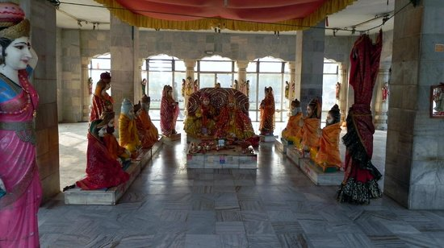
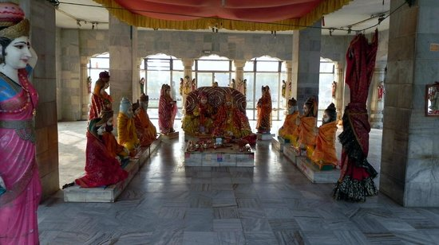
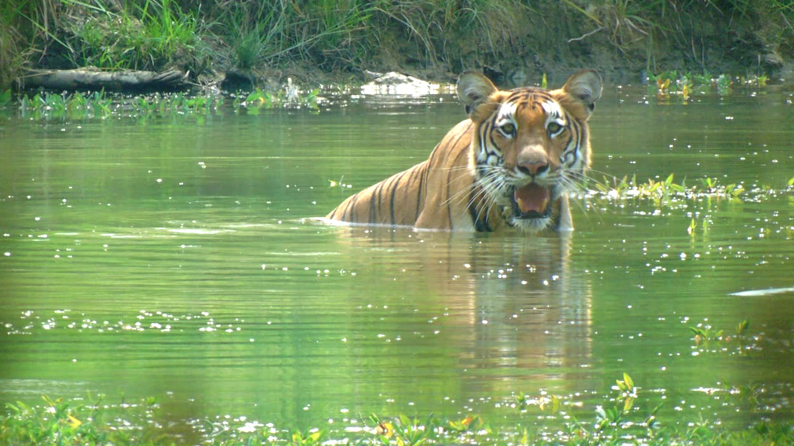
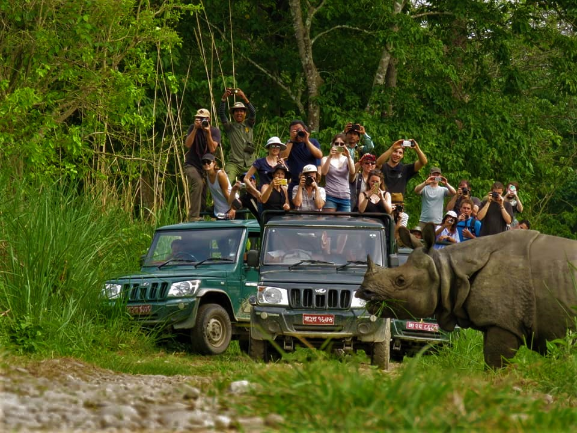
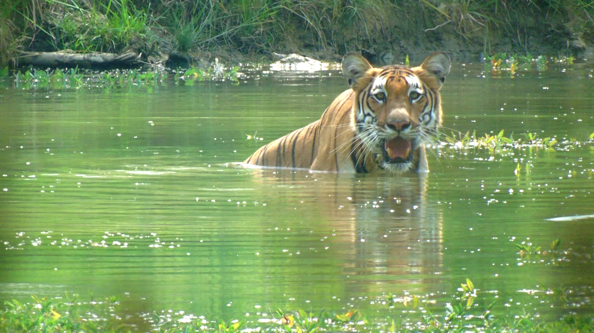
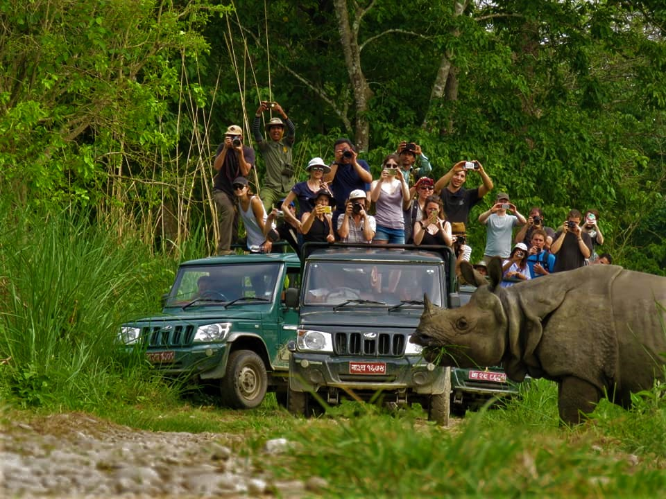
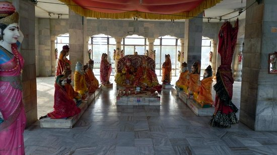
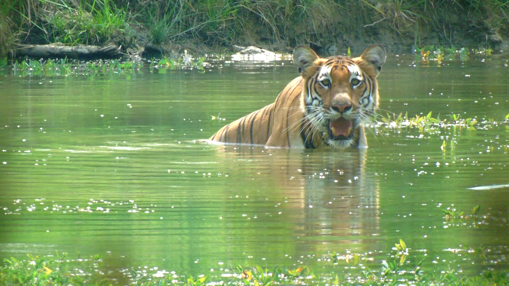
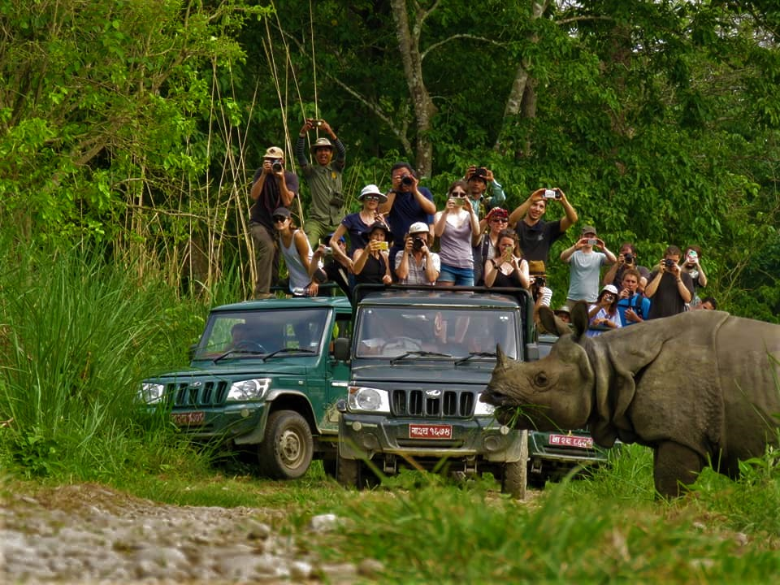

Offering an interesting mix of spiritual, religious, and cultural experiences, the temple complex has several Shiva lingams, Nandi Statue and temples of other Hindu and Buddhist deities. The complex is a living cultural heritage site and attracts Hindu devotees from across the world.
The exact date of the temple's construction is uncertain, but the current form of the temple was constructed in 1692 CE. Over time, many more temples have been erected around the two-storied temple, including the Vaishnava temple complex with a Rama temple from the 14th century and the Guhyeshwari Temple mentioned in an 11th-century manuscript.
Pashupatinath Temple is the oldest Hindu temple in Kathmandu. It is not known for certain when Pashupatinath Temple was built. But according to Nepal Mahatmaya and Himvatkhanda, the deity here gained great fame there as Pashupati. Pashupatinath Temple's existence is recorded as early as 400 CE. The ornamented pagoda houses the linga of Shiva. There are many legends describing how the temple of Aalok Pashupatinath came into existence here.
One legend says that Shiva and Parvati took the form of antelopes in the forest on the Bagmati river's east bank. The gods later caught up with him and grabbed him by one of his horns, forcing him to resume his divine form. The broken horn was worshipped as a linga, but over time it was buried and lost. Centuries later a herdsman found one of his cows showering the earth with milk, and after digging at the site, he discovered the divine linga of Pashupatinath.
According to Gopalraj Aalok Vhat, the temple was built by Prachanda Deva, a Licchavi king.
Another chronicle states that Pashupatinath Temple was in the form of Linga shaped Devalaya before Supuspa Deva constructed a five-storey temple of Pashupatinath in this place. As time passed, the temple needed to be repaired and renovated. It is known that this temple was reconstructed by a medieval king named Shivadeva (1099–1126 CE). It was renovated by Ananta Malla adding a roof to it.
The main temple complex of Pashupatinath and the sanctum sanctorum was left untouched, but some of the outer buildings in the complex were damaged by the April 2015 Nepal earthquake.
Location: Pashupati Nath Road 44621, Kathmandu 44600, Nepal
Timings: 4:00 am to 7:00 pm
Entry Fees: Foreigners: NPR 3000, SAARC: NPR 1000
2) Lumbini


Siddhartha Gautama, the Lord Buddha, was born in 623 B.C. in the famous gardens of Lumbini, which soon became a place of pilgrimage. Among the pilgrims was the Indian emperor Ashoka, who erected one of his commemorative pillars there. The site is now being developed as a Buddhist pilgrimage centre, where the archaeological remains associated with the birth of the Lord Buddha form a central feature.
The Lord Buddha was born in 623 BC in the sacred area of Lumbini located in the Terai plains of southern Nepal, testified by the inscription on the pillar erected by the Mauryan Emperor Asoka in 249 BC. Lumbini is one of the holiest places of one of the world's great religions, and its remains contain important evidence about the nature of Buddhist pilgrimage centres from as early as the 3rd century BC.
The complex of structures within the archaeological conservation area includes the Shakya Tank; the remains within the Maya Devi Temple consisting of brick structures in a cross-wall system dating from the 3rd century BC to the present century and the sandstone Ashoka pillar with its Pali inscription in Brahmi script. Additionally there are the excavated remains of Buddhist viharas (monasteries) of the 3rd century BC to the 5th century AD and the remains of Buddhist stupas (memorial shrines) from the 3rd century BC to the 15th century AD. The site is now being developed as a Buddhist pilgrimage centre, where the archaeological remains associated with the birth of the Lord Buddha form a central feature.
Location: Taulihawa Road, Lumbini Sanskritik 32900, Nepal
Timings: 6:00 am to 6:00 pm
Entry Fees: Foreigner: NPR 200, SAARC: NPR 100
3) Janaki Temple
 

An architectural marvel of Hindu and Koiri Nepali style, Janaki Temple is located in the Mithila district of Nepal and is dedicated to Goddess Sita. As per Hindu Mythology, it is the same place, where Sita was born and got married to God Rama.
It is amongst the most famous religious places to visit in Nepal to offer prayers and seek blessings of Hindu God Rama and his wife Sita.The temple is a beautiful three-storied structure and impresses with its facade, interiors, and decor.
Janaki Mandir (Nepali: जानकी मन्दिर) is a Hindu temple in Janakpurdham, Nepal, dedicated to the Hindu goddess Sita. It is an example of Koiri Hindu architecture. Fully built in bright white and constructed in an area of 1,480 square metres (15,930 sq. feet) in the Mithila Kingdom, it is a three-storied structure made entirely of stone and marble.
The walls of the temple have Mithila (Madhubani) paintings. All its 60 rooms are decorated with the flag of Nepal, coloured glass, engravings, and paintings, with lattice windows and turrets.According to the Ramayana, King Janaka ruled the Videha Kingdom from the region of Janakpur, which was the first capital of Mithila during the period. His daughter, Janaki (Sita), during her svayamvara (groom choosing ceremony), chose Rama as her husband, and become the queen of Ayodhya. Their wedding ceremony is believed to have occurred in the 5th century constructed ancient wedding mandapa attached to this temple, which was later reconstructed for repair by Amar Singh Thapa. The site was designated as a UNESCO tentative site in 2008.
Location: Janki Chowk South, 00977, Nepal
Timings: 5:30 am - 11:00 pm and 4:00 pm - 8:30 pm
4) Chitwan National Park
 



A world heritage site in Terai, Nepal, Chitwan National Park houses a diverse variety of birds, wild animals, and flora. It serves as the protection centre for One Horned Rhinoceros, Gharial Crocodiles, and Royal Bengal Tigers.
The park is one of the most serene and interesting places to visit in Nepal and houses souvenir shops, six resorts, a museum, a conservation centre, elephant safaris, an elephant breeding centre, etc.
Chitwan National Park is the first national park of Nepal. It was established in 1973 as the Royal Chitwan National Park and was granted the status of a World Heritage Site in 1984. It covers an area of 952.63 km2 (367.81 sq mi) in the subtropical Inner Terai lowlands of south-central Nepal in Nawalpur, Chitwan, Makwanpur and Parsa Districts. It ranges in elevation from about 100 m (330 ft) in the river valleys to 815 m (2,674 ft) in the Sivalik Hills.
In the north and west of the protected area the Narayani-Rapti river system forms a natural boundary to human settlements. Adjacent to the east of Chitwan National Park is Parsa National Park, contiguous in the south is the Indian Tiger Reserve Valmiki National Park. The coherent protected area of 2,075 km sq. (801 sq mi) represents the Tiger Conservation Unit (TCU) Chitwan-Parsa-Valmiki, which covers a 3,549 kmsq. (1,370 sq mi) huge block of alluvial grasslands and subtropical moist deciduous forests.
Location: Subarnapur 44200, Nepal
Timings: 6:00 am to 6:00 pm.
Entry Fees: Foreigners: NPR 2000, SAARC: NPR 1000, Nepalese: NPR 150.
More Places
S.N
Name
Location
Features
1.
Nagarkot
Bhaktapur District, Bagmati Pradesh, Nepal
The region offers stunning views of 8 Himalayan Ranges (out of 13) in Nepal including Mount Everest and Kathmandu Valley.
2.
Chandragiri
Kathmandu District, Bagmati Pradesh, Nepal
Known for its cable car ride, Chandragiri Hills offer not only captivated views of the Himalayan ranges but a chance to feel rejuvenated amid a fresh environment.
3.
Langtang National Park
Helambu, 45007, Nepal
Known for its trekking trails, Langtang National Park is close to Kathmandu Valley and is home to several species of flora and fauna. The sacred Gosaikunda Lake also passes through this park and adds to the beauty of the stunning landscapes.
4
Mt. Everest
Solukhumbu District, Province No. 1, Nepal
The highest mountain on the earth, Mount Everest is known as a dream destination for trekkers and indeed a life changing experience.Several rare and endangered species such as snow leopard, Himalayan black bear, red panda, musk deer, Himalayan wolves, etc., are also found in the region.
5
Trisuli River
Gosaikunda, Rasuwa, Nepal
Popular destination for kayaking, rafting, camping, and day trips, the Trisuli River is one of the most adventure-filled places to visit in Nepal. Running through a forested valley, it features relatively warm water and level IV rapids to enjoy thrilling water sports and adventures.
The Lord Buddha was born in 623 BC in the sacred area of Lumbini located in the Terai plains of southern Nepal, testified by the inscription on the pillar erected by the Mauryan Emperor Asoka in 249 BC. Lumbini is one of the holiest places of one of the world's great religions, and its remains contain important evidence about the nature of Buddhist pilgrimage centres from as early as the 3rd century BC.
The complex of structures within the archaeological conservation area includes the Shakya Tank; the remains within the Maya Devi Temple consisting of brick structures in a cross-wall system dating from the 3rd century BC to the present century and the sandstone Ashoka pillar with its Pali inscription in Brahmi script. Additionally there are the excavated remains of Buddhist viharas (monasteries) of the 3rd century BC to the 5th century AD and the remains of Buddhist stupas (memorial shrines) from the 3rd century BC to the 15th century AD. The site is now being developed as a Buddhist pilgrimage centre, where the archaeological remains associated with the birth of the Lord Buddha form a central feature.
Location: Taulihawa Road, Lumbini Sanskritik 32900, Nepal
Timings: 6:00 am to 6:00 pm
Entry Fees: Foreigner: NPR 200, SAARC: NPR 100

It is amongst the most famous religious places to visit in Nepal to offer prayers and seek blessings of Hindu God Rama and his wife Sita.The temple is a beautiful three-storied structure and impresses with its facade, interiors, and decor.
Janaki Mandir (Nepali: जानकी मन्दिर) is a Hindu temple in Janakpurdham, Nepal, dedicated to the Hindu goddess Sita. It is an example of Koiri Hindu architecture. Fully built in bright white and constructed in an area of 1,480 square metres (15,930 sq. feet) in the Mithila Kingdom, it is a three-storied structure made entirely of stone and marble.
The walls of the temple have Mithila (Madhubani) paintings. All its 60 rooms are decorated with the flag of Nepal, coloured glass, engravings, and paintings, with lattice windows and turrets.According to the Ramayana, King Janaka ruled the Videha Kingdom from the region of Janakpur, which was the first capital of Mithila during the period. His daughter, Janaki (Sita), during her svayamvara (groom choosing ceremony), chose Rama as her husband, and become the queen of Ayodhya. Their wedding ceremony is believed to have occurred in the 5th century constructed ancient wedding mandapa attached to this temple, which was later reconstructed for repair by Amar Singh Thapa. The site was designated as a UNESCO tentative site in 2008.
Location: Janki Chowk South, 00977, Nepal
Timings: 5:30 am - 11:00 pm and 4:00 pm - 8:30 pm
4) Chitwan National Park


A world heritage site in Terai, Nepal, Chitwan National Park houses a diverse variety of birds, wild animals, and flora. It serves as the protection centre for One Horned Rhinoceros, Gharial Crocodiles, and Royal Bengal Tigers.
The park is one of the most serene and interesting places to visit in Nepal and houses souvenir shops, six resorts, a museum, a conservation centre, elephant safaris, an elephant breeding centre, etc.
Chitwan National Park is the first national park of Nepal. It was established in 1973 as the Royal Chitwan National Park and was granted the status of a World Heritage Site in 1984. It covers an area of 952.63 km2 (367.81 sq mi) in the subtropical Inner Terai lowlands of south-central Nepal in Nawalpur, Chitwan, Makwanpur and Parsa Districts. It ranges in elevation from about 100 m (330 ft) in the river valleys to 815 m (2,674 ft) in the Sivalik Hills.
In the north and west of the protected area the Narayani-Rapti river system forms a natural boundary to human settlements. Adjacent to the east of Chitwan National Park is Parsa National Park, contiguous in the south is the Indian Tiger Reserve Valmiki National Park. The coherent protected area of 2,075 km sq. (801 sq mi) represents the Tiger Conservation Unit (TCU) Chitwan-Parsa-Valmiki, which covers a 3,549 kmsq. (1,370 sq mi) huge block of alluvial grasslands and subtropical moist deciduous forests.
Location: Subarnapur 44200, Nepal
Timings: 6:00 am to 6:00 pm.
Entry Fees: Foreigners: NPR 2000, SAARC: NPR 1000, Nepalese: NPR 150.
More Places
S.N
Name
Location
Features
1.
Nagarkot
Bhaktapur District, Bagmati Pradesh, Nepal
The region offers stunning views of 8 Himalayan Ranges (out of 13) in Nepal including Mount Everest and Kathmandu Valley.
2.
Chandragiri
Kathmandu District, Bagmati Pradesh, Nepal
Known for its cable car ride, Chandragiri Hills offer not only captivated views of the Himalayan ranges but a chance to feel rejuvenated amid a fresh environment.
3.
Langtang National Park
Helambu, 45007, Nepal
Known for its trekking trails, Langtang National Park is close to Kathmandu Valley and is home to several species of flora and fauna. The sacred Gosaikunda Lake also passes through this park and adds to the beauty of the stunning landscapes.
4
Mt. Everest
Solukhumbu District, Province No. 1, Nepal
The highest mountain on the earth, Mount Everest is known as a dream destination for trekkers and indeed a life changing experience.Several rare and endangered species such as snow leopard, Himalayan black bear, red panda, musk deer, Himalayan wolves, etc., are also found in the region.
5
Trisuli River
Gosaikunda, Rasuwa, Nepal
Popular destination for kayaking, rafting, camping, and day trips, the Trisuli River is one of the most adventure-filled places to visit in Nepal. Running through a forested valley, it features relatively warm water and level IV rapids to enjoy thrilling water sports and adventures.
The park is one of the most serene and interesting places to visit in Nepal and houses souvenir shops, six resorts, a museum, a conservation centre, elephant safaris, an elephant breeding centre, etc.
Chitwan National Park is the first national park of Nepal. It was established in 1973 as the Royal Chitwan National Park and was granted the status of a World Heritage Site in 1984. It covers an area of 952.63 km2 (367.81 sq mi) in the subtropical Inner Terai lowlands of south-central Nepal in Nawalpur, Chitwan, Makwanpur and Parsa Districts. It ranges in elevation from about 100 m (330 ft) in the river valleys to 815 m (2,674 ft) in the Sivalik Hills.
In the north and west of the protected area the Narayani-Rapti river system forms a natural boundary to human settlements. Adjacent to the east of Chitwan National Park is Parsa National Park, contiguous in the south is the Indian Tiger Reserve Valmiki National Park. The coherent protected area of 2,075 km sq. (801 sq mi) represents the Tiger Conservation Unit (TCU) Chitwan-Parsa-Valmiki, which covers a 3,549 kmsq. (1,370 sq mi) huge block of alluvial grasslands and subtropical moist deciduous forests.
Location: Subarnapur 44200, Nepal
Timings: 6:00 am to 6:00 pm.
Entry Fees: Foreigners: NPR 2000, SAARC: NPR 1000, Nepalese: NPR 150.
More Places
| S.N | Name | Location | Features |
|---|---|---|---|
| 1. | Nagarkot | Bhaktapur District, Bagmati Pradesh, Nepal | The region offers stunning views of 8 Himalayan Ranges (out of 13) in Nepal including Mount Everest and Kathmandu Valley. |
| 2. | Chandragiri | Kathmandu District, Bagmati Pradesh, Nepal | Known for its cable car ride, Chandragiri Hills offer not only captivated views of the Himalayan ranges but a chance to feel rejuvenated amid a fresh environment. |
| 3. | Langtang National Park | Helambu, 45007, Nepal | Known for its trekking trails, Langtang National Park is close to Kathmandu Valley and is home to several species of flora and fauna. The sacred Gosaikunda Lake also passes through this park and adds to the beauty of the stunning landscapes. |
| 4 | Mt. Everest | Solukhumbu District, Province No. 1, Nepal | The highest mountain on the earth, Mount Everest is known as a dream destination for trekkers and indeed a life changing experience.Several rare and endangered species such as snow leopard, Himalayan black bear, red panda, musk deer, Himalayan wolves, etc., are also found in the region. |
| 5 | Trisuli River | Gosaikunda, Rasuwa, Nepal | Popular destination for kayaking, rafting, camping, and day trips, the Trisuli River is one of the most adventure-filled places to visit in Nepal. Running through a forested valley, it features relatively warm water and level IV rapids to enjoy thrilling water sports and adventures. |